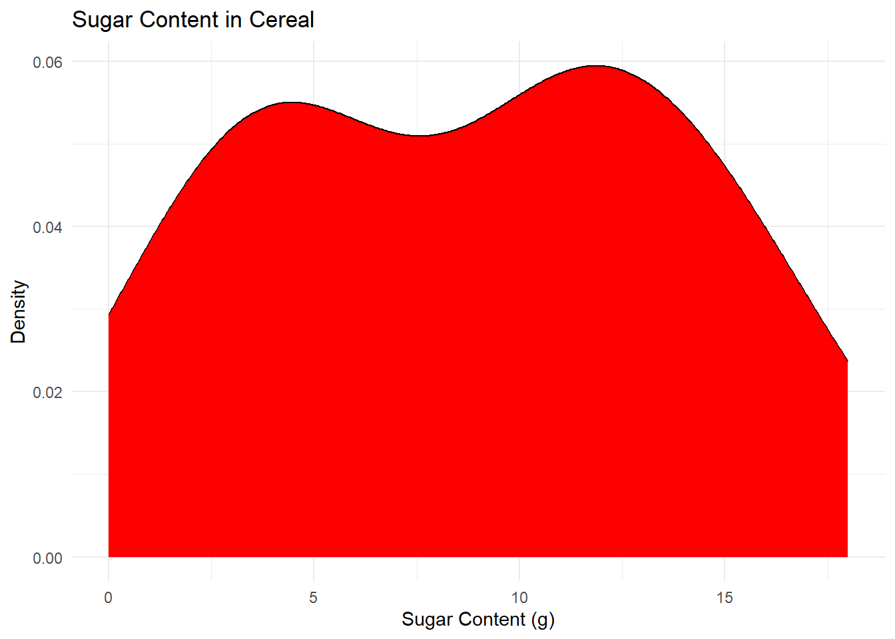

Code
library(tidyverse)
library(ggplot2)
knitr::opts_chunk$set(echo = TRUE)library(tidyverse)
library(ggplot2)
knitr::opts_chunk$set(echo = TRUE)cereal <- read.csv("_data/cereal.csv")
cereal Cereal Sodium Sugar Type
1 Frosted Mini Wheats 0 11 A
2 Raisin Bran 340 18 A
3 All Bran 70 5 A
4 Apple Jacks 140 14 C
5 Captain Crunch 200 12 C
6 Cheerios 180 1 C
7 Cinnamon Toast Crunch 210 10 C
8 Crackling Oat Bran 150 16 A
9 Fiber One 100 0 A
10 Frosted Flakes 130 12 C
11 Froot Loops 140 14 C
12 Honey Bunches of Oats 180 7 A
13 Honey Nut Cheerios 190 9 C
14 Life 160 6 C
15 Rice Krispies 290 3 C
16 Honey Smacks 50 15 A
17 Special K 220 4 A
18 Wheaties 180 4 A
19 Corn Flakes 200 3 A
20 Honeycomb 210 11 CThe data set shows the sugar (g) and sodium (mg) content per serving for 20 different cereals. It also categorizes the cereals as children cereals or adult cereals (in the type column).
In order to make the data tidy, I pivoted it longer to a 40x4 tibble so that each row can be a separate observation, either the sugar content or the sodium content.
cereal_tidy <- pivot_longer(cereal, c(Sodium, Sugar), names_to = "Chemical", values_to = "Amount")
cereal_tidy# A tibble: 40 × 4
Cereal Type Chemical Amount
<chr> <chr> <chr> <int>
1 Frosted Mini Wheats A Sodium 0
2 Frosted Mini Wheats A Sugar 11
3 Raisin Bran A Sodium 340
4 Raisin Bran A Sugar 18
5 All Bran A Sodium 70
6 All Bran A Sugar 5
7 Apple Jacks C Sodium 140
8 Apple Jacks C Sugar 14
9 Captain Crunch C Sodium 200
10 Captain Crunch C Sugar 12
# … with 30 more rowscereal_tidy %>%
select(Type)%>%
table()Type
A C
20 20 cereal_tidy %>%
filter("Sodium" == Chemical) %>%
group_by(Type)%>%
summarize(Mean = mean(Amount), Median = median(Amount), Minimum =min(Amount), Maximum = max(Amount), Std = sd(Amount), IQR= IQR(Amount))# A tibble: 2 × 7
Type Mean Median Minimum Maximum Std IQR
<chr> <dbl> <dbl> <int> <int> <dbl> <dbl>
1 A 149 165 0 340 98.1 118.
2 C 185 185 130 290 47.4 62.5cereal_tidy %>%
filter("Sugar" == Chemical) %>%
group_by(Type)%>%
summarize(Mean = mean(Amount), Median = median(Amount), Minimum =min(Amount), Maximum = max(Amount), Std = sd(Amount), IQR= IQR(Amount))# A tibble: 2 × 7
Type Mean Median Minimum Maximum Std IQR
<chr> <dbl> <dbl> <int> <int> <dbl> <dbl>
1 A 8.3 6 0 18 6.25 10
2 C 9.2 10.5 1 14 4.49 5.25We can see that there are 10 adult cereals, and 10 children cereals, with the children cereals having slightly higher sodium and sugar content than the adult ones.
cereal_tidy %>%
filter(Chemical == "Sodium") %>%
ggplot(aes(Amount)) +
geom_density(fill= "blue")+
theme_minimal()+
labs(title = "Sodium Content in Cereal", x= "Sodium Content (mg)", y= "Density")
cereal_tidy %>%
filter(Chemical == "Sugar") %>%
ggplot(aes(Amount)) +
geom_density(fill= "red")+
theme_minimal()+
labs(title = "Sugar Content in Cereal", x= "Sugar Content (g)", y= "Density")
For Univariate Visualizations, I am choosing to make density plots for the sugar and sodium content across different cereals. I am choosing this because the sodium content is a continuous variable, so while a chart like a bar plot will tell us the frequency of each exact amount of sodium or sugar, a density graph better shows the overall shape of the pattern in the data, and can let us make more general observations.
cereal %>%
ggplot(aes(x= Sodium, y= Sugar)) +
geom_point() +
geom_smooth() +
theme_minimal() +
labs(title= "Sugar and Sodium Correlation in Cereals", x= "Sodium Content (mg)", y= "Sugar Content(g)")`geom_smooth()` using method = 'loess' and formula = 'y ~ x'
At this point I see that while the tidy data is better for somethings, it is easier to use the original data set to perform correlations between the different chemicals in the same cereal. Here I chose a point plot with a smooth function to see if there was any link between the sugar and sodium content, but there appears to not be a strong correlation.
We have the variable distinguishing Adult and Children cereal, so the last two plots, I wanted to compare the sugar and sodium content. I chose to make two boxplots to be able to compare them side by side because we are using a categorical and a continuous variable.
cereal %>%
mutate(Type= case_match(Type, "C" ~ "Child", "A"~ "Adult")) %>%
ggplot(aes(x= Type, y= Sodium))+
geom_boxplot() +
theme_minimal() +
labs(title = "Sodium Content Comparison in Adult and Children's cereal", y= "Sodium content(mg)", x= "Cereal Type")
cereal %>%
mutate(Type= case_match(Type, "C" ~ "Child", "A"~ "Adult")) %>%
ggplot(aes(x= Type, y= Sugar))+
geom_boxplot() +
theme_minimal() +
labs(title = "Sugar Content Comparison in Adult and Children's cereal", y= "Sugar content(g)", x= "Cereal Type")
These graphs provide us meaningful information about the differences between adult and children cereals. While cereals for children have a more consistent sodium content, it has only a slightly higher average amount of sodium. It also shows that kids cereals tend to have more sugar, while adult cereals cover a wider range, and have a larger varience.